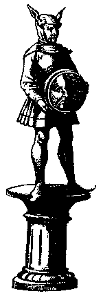

Oestra?

The Saxon idol of the moon (possibly Oestra), portrayed as a goddess wearing a hood representing the ears of a hare and holding a moon disk. From R.Verstigan, A Restitution of Decayed
Intelligence, Antwerp, 1605, Ch.3 Cited in The Leaping Hare
I don't like 3rd hand references, if anyone has access to a copy of A Restitution of Decayed Intelligence,
and can tell me more about this picture please leave a message in the guestbook. Does anyone know more about Oestra? Is the hood meant to represent the ears of a hare or a Donkey
update: according to cavalorn http://cavalorn.livejournal.com/502368.html this is actually intended to represent Mani, Anglo Saxon MALE deity of the moon.

Back to main page
Back to the Toad and the Hare
Back to Calendars